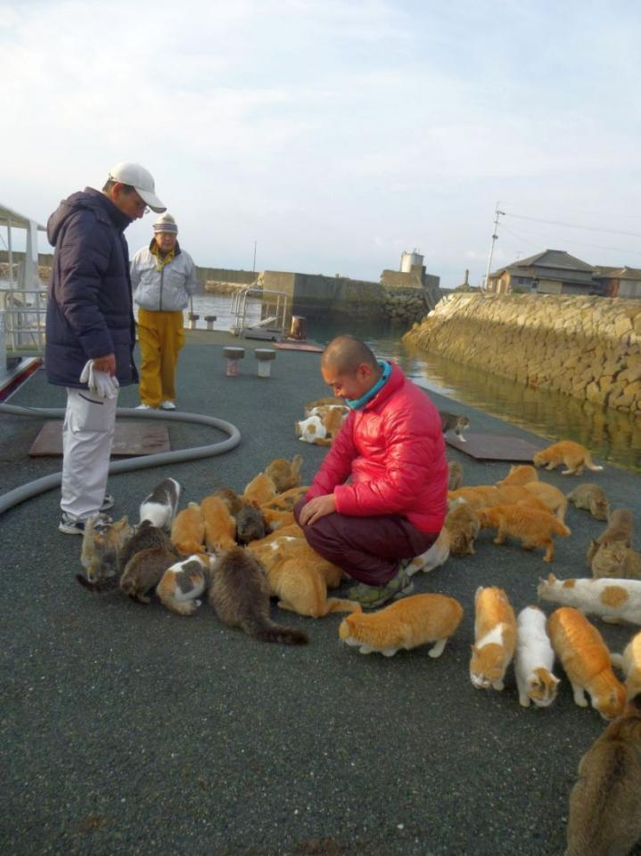
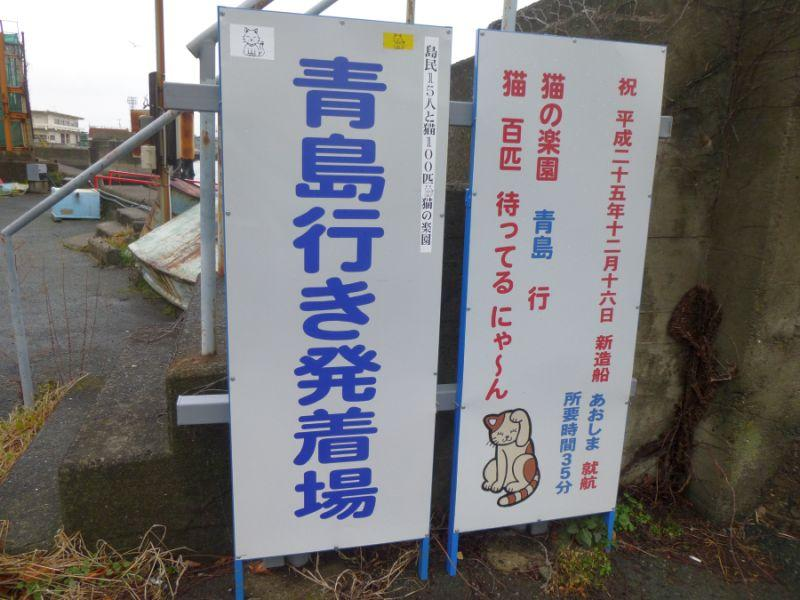
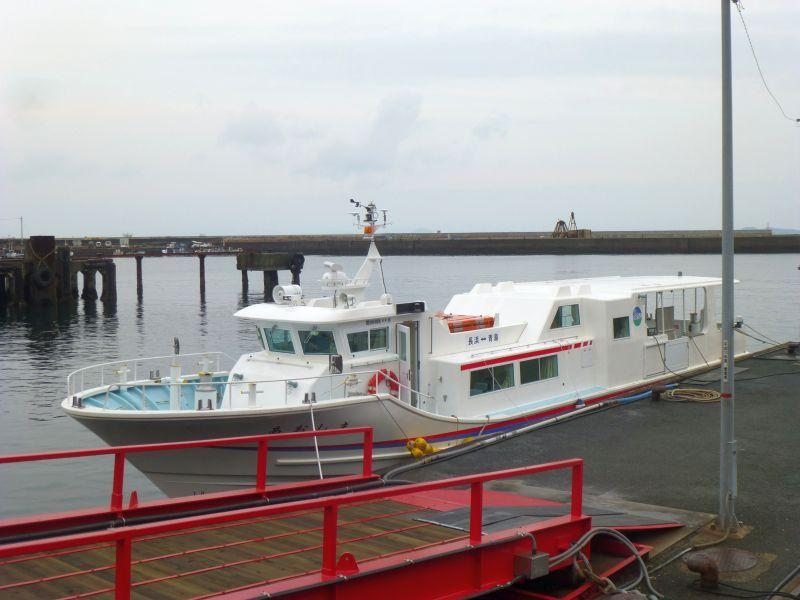
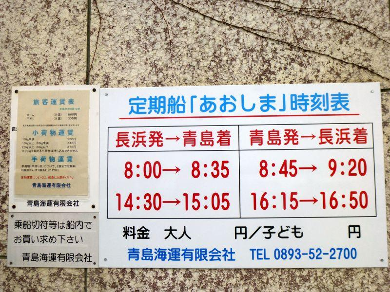
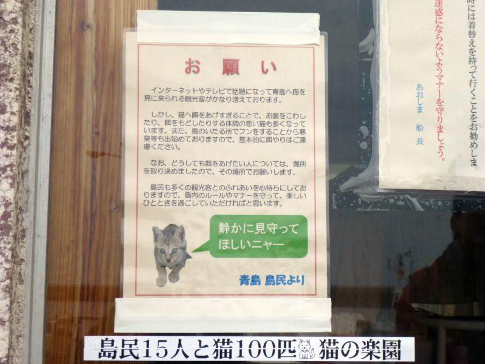

猫パンチにご用心。元祖ネコの島への渡航注意点 < 青島 / 愛媛県大洲市長浜町 >

瀬戸内海に浮かぶ離島には 人口よりも猫が多い、ネコだらけの島があります。
「猫の楽園」
として今やブームにもなっている猫の島。その元祖とも言える島が愛媛県にあります。
猫の島へのアクセス

元祖猫島こと 青島へのアクセスは船。発着港は愛媛県南予地方にある長浜港(大洲市長浜町)です。
港へのアクセスは JR伊予長浜駅から徒歩すぐ。自家用車であれば 港に数台 駐車場の用意があります。
前者は 運行便数が少ないので、事前のダイヤ調べが必須。
後者は 週末や連休など、青島への渡航者が急増する日程は 港最寄りの駐車場が不足するので注意が必要です。

定期船あおしま
瀬戸内海小離島の標準型。
基本的に徒歩乗船のみ。車両は積載できませんが、青島の広さを考えると その必要は無いと思います。
青島渡航の注意点・交通編

交通機関利用で長浜発8時の午前便に乗る場合、
松山駅 6:04 宇和島行き各駅停車
↓
伊予長浜駅 7:17
で乗船可能です。
< 往路 >長浜発午前便
↓
< 復路 >青島発午前便
で行き来するには、島内滞在10分間。
これはさすがにあっと言う間...と、
< 往路 >長浜発午前便
↓
< 復路 >青島発午後便
長浜発午前便を選択された方の多くが、青島午後便を選択します。これだと島内持ち時間 約8時間です。
*「いくら猫の楽園でも、8時間もは...」
島内には商店どころか自販機もありません。エアコンはもちろん 日陰もこれと言って無いので、夏場は特に厳しい環境です。
< 往路 >長浜発午後便
↓
< 復路 >青島発午後便
これだと島内滞在約1時間。
午前・午前... 10分間
午前・午後... 8時間
午後・午後... 1時間
この三択で言えば、午後・午後便利用が適当なように思います。午後14時台に長浜港とすると、県外から来る場合でも ハードルは少し下がります。
が、ここで注意！！
午前に長浜から乗船した方々が、青島からの戻りで午後便を選択されると、午後の長浜発便は その予約数を除いた席数がリリースされます。
これは島内に宿泊施設が無いため、青島に渡った方が確実に全員戻るための措置と思われます。
極端な話、
午前便が満席かつ その乗客が全員午後便での戻りを希望した場合、長浜発の午後便は乗客ゼロで出港することになり、誰も乗船することができません。
愛媛県に、それも南予の方へ朝8時に来るには なかなか難しい。
かと言って週末・連休の午後便は 前述のリスクがある。現状は島民優先のダイヤで 観光客が利用するには難易度が高めです。
青島渡航の注意点・マナー編

現在は 島の実情が差し置かれた形で、来島者は増え続けています。
観光客が増えると、それに比例して マナーが良くない方も増えるわけで...
SNS等で急激に人気上昇したスポットを中心に 全国どこでも起きている問題ですが、ここでは島や猫たちの事情に理解がある方々が渡航されることを望みます...
おさらい
☆ 午前長浜・午後青島
夏場は食糧・水分・日よけ対策を十分に
☆ 午後長浜・午後青島
満席で乗船できないことがある
☆ JR利用で伊予長浜駅へ向かう場合
南予方面 「伊予大洲」「八幡浜」「宇和島」等、当該区間は 行先は同じでも運行経路が異なる場合があります。
「予讃線旧線」「長浜回り」「海線」の方へ乗車されてください。
なお、便数が多く特急列車も走っているのは「予讃線新線」「内子回り」「山線」です。
続き
2018,5/12 猫パンチにご用心。元祖ネコの島 < 青島 / 愛媛県大洲市長浜町 >
定期船あおしま乗船場(長浜港)
< 自家用車 >
高松駅から 約2時間40分、190km
徳島阿波おどり空港から 約1時間、39km
< 列車 >
松山駅から各駅停車で 1時間～1時間半
(特急列車等の退避待ち等で所要時間が変動します)
※ 主な地点からの最速・最短距離